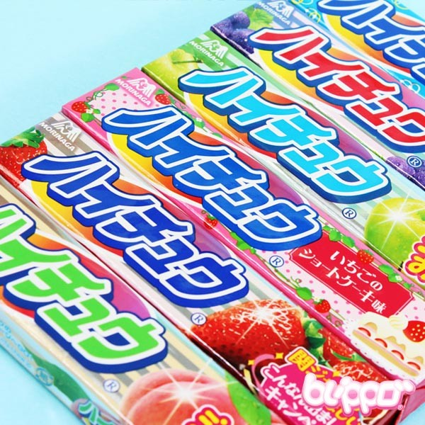
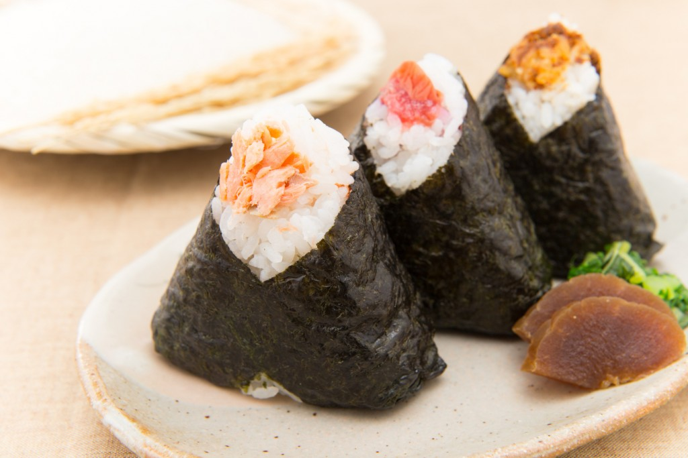
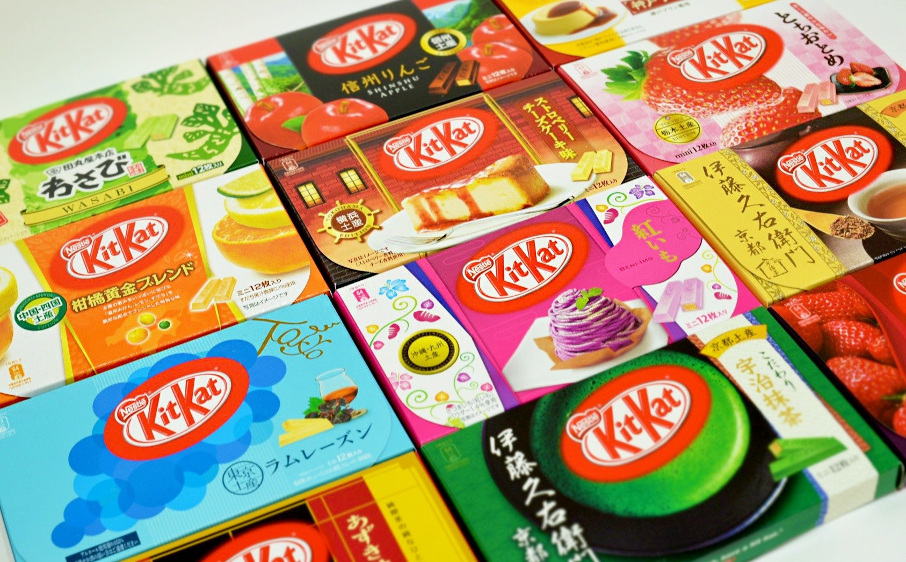

Japanese snacks are the best. No, really. As opposed to American snacks which strive to kill you with overdoses of sugar and salt, Japanese snacks allow you to feel a little less guilty for indulging.
Some of my personal favorites:
1) HI-CHEWS

Think of it as a less sweet, less toothache-inducing version of Starbursts. Except with better flavors.
2) ONIGIRI

Rice balls wrapped in seaweed and usually filled with some kind of seafood inner like samon or tuna.
3) KIT KATS

I know what you're thinking, "we already have those in the US!" but trust me when I say the Japanese ones are better. The flavor selection alone is a million times better than ours. Blueberry? Sake? Cheesecake? Sign me up.
All of these snacks can be found in the countless 'konbinis', aka convenience stores, in the area.